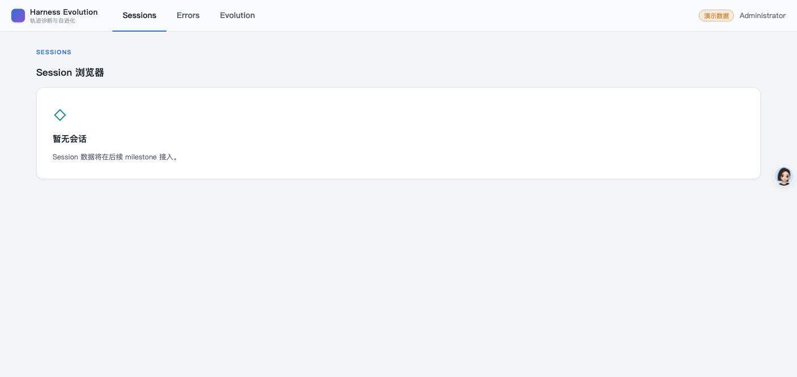
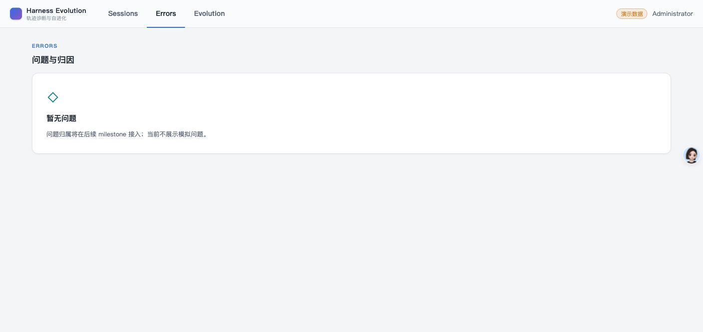
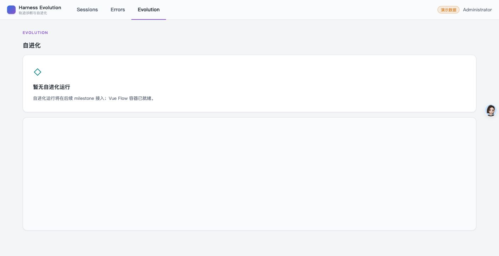

- Issue
- #38 · M2-06 Session Query API
- PR
- #96
- Base commit
- 6c72742 + path regression fix
- Runtime
- FastAPI + SQLite + Vite + Chrome
- Database
- temporary HE_DATA_DIR/harness.db
Harness Evolution · PR #96
M2-06 Session Query API 集成冒烟报告
在真实 SQLite、FastAPI、Vite 与 Chrome 上验证 Session 列表、详情、执行树和错误契约；本地导入/重放与 API 共享默认数据库，亮色原型壳无回归。
12冒烟场景
12通过
4Session
66Agent 节点
Environment and Artifact
2026-10-26 · macOS · Chrome · localhostScenario Matrix
1 fixed · 11 pass| # | 场景 | 结果 | 观测 | 证据 |
|---|---|---|---|---|
| 01 | 默认数据库路径一致 | FAIL → FIXED | 修复前 CLI 写 harness-evolution.sqlite、API 读 harness.db；修复后全新 HE_DATA_DIR 的 import、replay、API 共用 harness.db。 | api-results.json pnpm test:gates: local session commands use the API default SQLite database |
| 02 | Session 列表 | PASS | GET /api/sessions 返回 4 个 root session，契约字段完整。 | api-results.json: listCount=4 |
| 03 | 搜索与通配符转义 | PASS | 实际标题搜索命中 3 个；通配符字面搜索返回 0，未扩大查询。 | api-results.json: searchMatches=3、wildcardEscaped=true |
| 04 | 状态过滤与稳定排序 | PASS | all/ok/partial/fail/problem 以及 latest/userTurns/messages/agents 均返回 200，limit=2 生效。 | api-results.json scripts: API smoke assertions |
| 05 | 列表/详情同构 | PASS | GET /api/sessions/{id} 与列表卡字段、统计完全一致。 | api-results.json: listShape/statsShape |
| 06 | 执行树规模 | PASS | 四棵树节点数为 2/1/2/61，总计 66；每个 root 恰好一个 main。 | api-results.json: treeAgentCounts |
| 07 | 事件偏移与问题锚点 | PASS | 事件行号、messageOffset 均在契约范围；当前临时树无外部 bad case，锚点计数为 0。 | api-results.json: badCaseCounts |
| 08 | 统一错误契约 | PASS | limit=0 返回 VALIDATION_INVALID；不存在 Session 返回 SESSION_NOT_FOUND；匿名请求返回 AUTH_REQUIRED。 | api-results.json: invalidLimit/missingSession/anonymous |
| 09 | 内容隐私边界 | PASS | 响应契约不含 prompt/content/payload/thinking，未暴露轨迹正文或本地路径。 | api-results.json: contentLeak=false |
| 10 | 原型亮色壳层 | PASS | body rgb(244,245,247)、topbar rgb(250,251,252) 且高 56px、内容卡纯白；Sessions/Errors/Evolution 占位页正常。 | screenshots/01-sessions.jpg screenshots/02-errors.jpg screenshots/03-evolution.jpg |
| 11 | 浏览器控制台 | PASS | 登录、Sessions、Errors、Evolution 导航后 warning/error 为 0。 | console-main.json |
| 12 | 自动化与双方言边界 | PASS | Session/OpenAPI 聚焦测试 12 passed；SQLite 17 passed；MySQL 查询契约由 CI service lane 实跑。 | CI run for PR #96 focused session/openapi tests |
Issues and Observations
No defects foundNo defects were found.
Evidence
3 screenshots


Automated Coverage Assessment
4 areas reviewed| 区域 | 覆盖 | 结论 | 建议 |
|---|---|---|---|
| Session API | 真实 HTTP + SQLite canonical data | 列表、详情、树、搜索、过滤、排序和错误契约均通过。 | 保持 MySQL marked contract 在 CI 执行。 |
| CLI/API 数据库路径 | 全新临时 HE_DATA_DIR + cross-language gate | import、replay 和 API 共用 harness.db，跨栈路径回归已覆盖。 | 其它本地数据命令继续复用同一派生规则。 |
| 浏览器壳层 | Computer Use + 自动 E2E | 亮色原型视觉基线正常，正常路径控制台无告警。 | Session 页面实现时继续以原型 HTML 为验收基准。 |
| 并发快照 | 自动化 repository/service 回归 | tree 使用单一数据库 session 快照；CUA 不重复制造并发写入。 | 保留并发 replay 回归。 |
Conclusion
通过M2-06 Session Query API 与真实 canonical 数据、共享 SQLite 路径及亮色原型壳协同正常。
- 4 个 Session、66 个 Agent 节点全部可查询。
- Session 页面仍为真实空态，页面实现留给后续 UI issue。
- 发现并修复本地 CLI/API 默认数据库路径不一致。
- 浏览器控制台无 warning/error。
证据源：真实 HTTP、临时 SQLite、Computer Use 截图、浏览器日志和自动门禁。